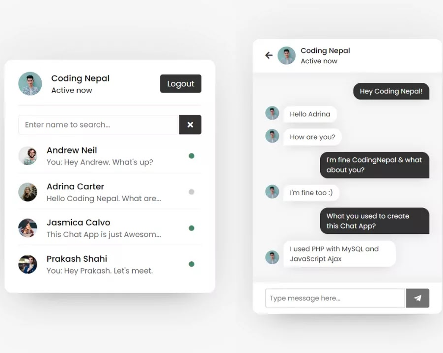
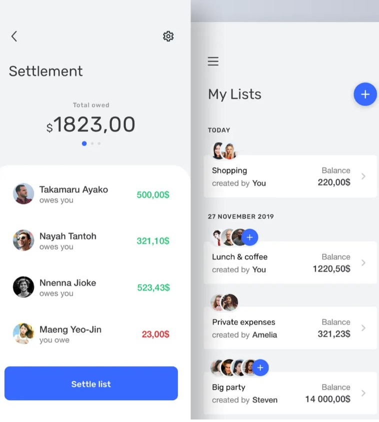
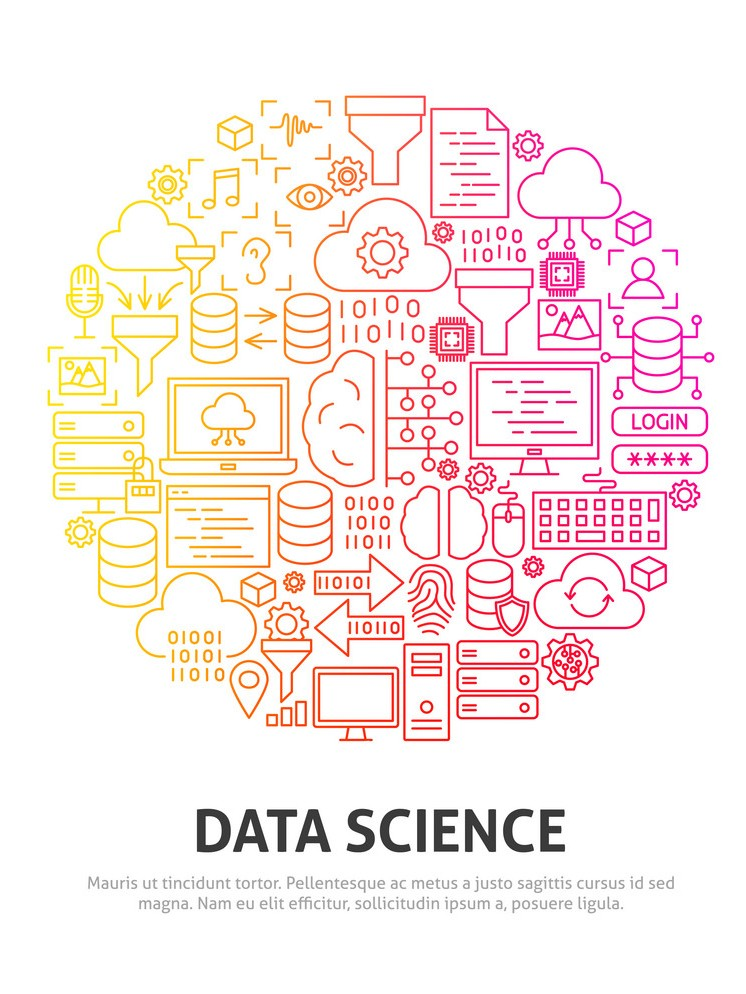

My work


Expense Spliter
• Splitter is a Full Stack Expense Splitting App built with Next.js, React.js, and Tailwind CSS, featuring AI insights for smart expense management. • It includes real-time payment updates, user authentication via Clerk, and uses Convex for database operations. • Users can manage individual and group expenses, settle debts, and customize the interface.

URL Shortner
URL Shortener is a modern web application built with React.js, Tailwind CSS, ShadCN UI, and Supabase. It allows users to shorten long URLs into compact, shareable links with real-time analytics. Supabase handles authentication and database storage, while ShadCN provides a sleek, responsive UI for seamless user experience.
